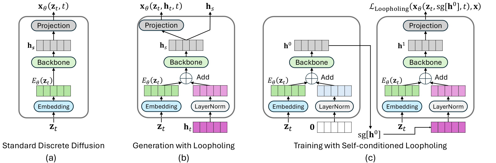
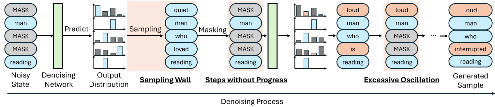
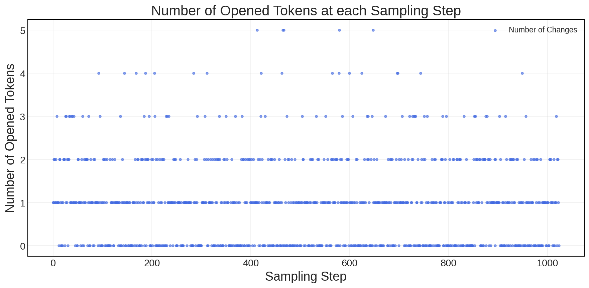
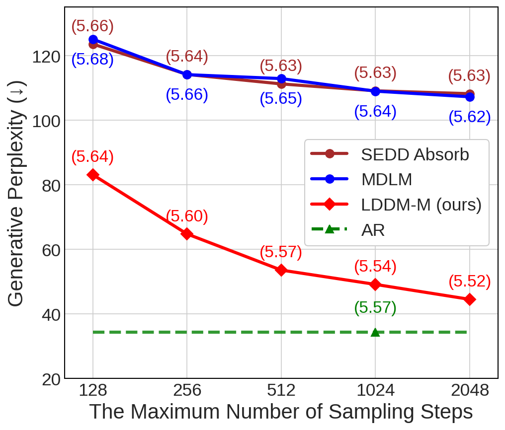
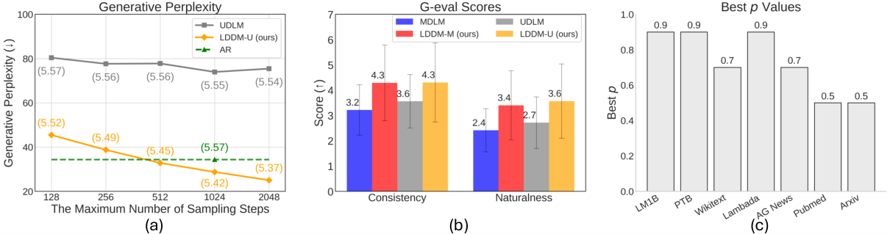
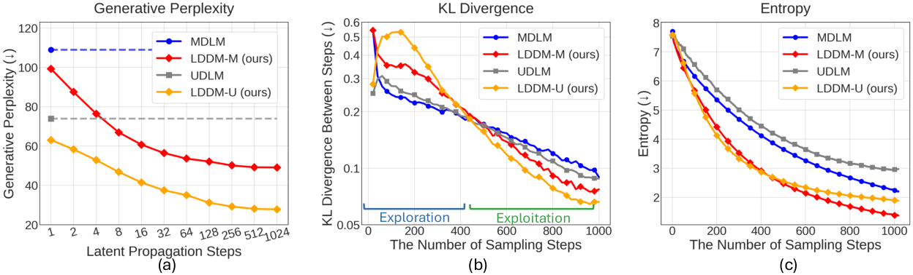

Loopholing 离散扩散：在“采样墙”上开一条确定性的通路
Loopholing Discrete Diffusion: Deterministic Bypass of the Sampling Wall
GitHub star 为 2026-10-20 的快照。阅读状态、进度与收藏只保存在你的浏览器里。
逐节精读
这部分按论文的章节顺序，用本站自己的话把整篇论文从头讲一遍。读懂某个概念需要的背景知识，会在第一次用到它之前单独讲清楚（青色框）。每个结论都尽量说出“因为什么、所以什么”。论文以 CC BY 4.0 许可发布，所以原图直接放在讲到它的地方，并说明这张图怎么看；原图没有画到的概念，用本站的示意图补上。标“推算”的数字是本站根据论文数据算出来的，不是论文原话；标“读图”的数字是从原文曲线上估读的。本页依据 arXiv 第 3 版（v3，2026-05-13）；附录 D.8–D.12 是 v1（2025-10-22）之后补充的。每节末尾有英文原文的链接。
0 导读：这篇论文解决什么问题
离散扩散语言模型生成一段文字的方式，和自回归模型“一个词接一个词往后写”很不一样。它先摆出一整张“画布”：长度固定，每个位置要么是特殊的 [MASK] 符号（掩码扩散），要么是随机的词（均匀态扩散）。然后它反复做同一件事：把整张画布送进一个双向 Transformer，网络为每个位置输出一个覆盖整个词表的概率分布，采样器再按这些分布给一部分位置抽出具体的词，写回画布。几百上千步之后，画布上就是一段完整的文字。
这篇论文盯住了这个循环里一个很容易被忽略的环节：网络每一步算出的是一个信息很丰富的东西，比如“这个位置有 60% 像 cat、30% 像 dog”，还有它最后一层几百维的隐藏向量；可是一旦采样，留在画布上的只有一个词。下一步网络只能看到画布，看不到上一步的那份分布，等于很多推断要从头再做一遍。作者把这个“信息在采样处被截断、过不去”的现象叫作采样墙（sampling wall）。
论文的办法叫 Loopholing，字面意思是“钻空子”，这里指在墙上开一个洞。做法很简单：每一步照常采样，同时把网络最后一层的隐状态 \(\mathbf{h}\)（采样之前的连续向量）原样交给下一步，和下一步的词嵌入加在一起。于是每一步有两个输出：一个随机的 one-hot 词，一个确定性的连续向量。这样做的麻烦在训练：\(\mathbf{h}\) 要从上一步传来，生成过程就变成了一个跨步的循环，按道理要把成百上千步的生成链整条展开再反向传播，这在扩散模型里是不可接受的。作者借用了图像扩散里的自条件化（self-conditioning）：对同一张加噪画布先用 \(\mathbf{h}=\mathbf{0}\) 算一遍，得到一个“假装是上一步传来的” \(\mathbf{h}^0\)，再把它截断梯度后喂回去算第二遍，只对第二遍求损失。
结果在 1.69 亿参数的模型上相当醒目。在 OpenWebText（OWT）上训练 100 万步后，用 1024 步生成 1024 个 token，GPT-2 Large 评出的生成困惑度从掩码扩散基线 MDLM 的 108.94 降到 49.13；均匀态基线 UDLM 从 73.95 降到 28.76，低于论文自回归基线的 34.40。似然方面，OWT 困惑度上界从 23.05 降到 21.90。在 Countdown 和 24 点这类算术谜题上，8500 万参数模型的成功率从 86.5% / 47% 提到 94.4% / 63%。代价是训练时间多约 30%，推理时每一步的计算几乎不变。
这是哪一种“循环”
本站把这篇论文同时放在“循环 Transformer”和“扩散 LLM”两个分类下，所以先把“循环”这个词说清楚。在扩散语言模型里，“循环”至少有两种完全不同的意思：
- 深度方向的循环。在一个去噪步之内，把同一组 Transformer 层反复算 \(r\) 遍，相当于不增加参数、把网络变深。自回归模型里的 Huginn、Ouro 是这一类；扩散模型里，同一批的 LoopMDM、R-MDM 和 ALoDLM 主要也是这一类。它的代价很直接：每一步的计算变成原来的约 \(r\) 倍，而扩散模型本来就要走 \(T\) 步，所以整段生成的计算也乘上了 \(r\)。
- 跨去噪步的循环。每一步网络只算一遍，但把这一步的某种内部状态带到下一步。Loopholing 是这一类：它的“循环次数”就是去噪步数 \(T\)，不额外花计算。同一批里的 Loop-Distill 则属于第一种，但它的深度循环只发生在训练时的教师模型里，学到的东西再蒸馏回一次普通的前向。
两种循环虽然方向不同，结构上却是近亲。Huginn 的循环块每一轮都把“上一轮的隐状态”和“输入嵌入”加在一起再算一遍；Loopholing 的每一步也是把“上一步的隐状态”和“当前画布的词嵌入”加在一起再算一遍。区别在于：Huginn 每一轮的输入不变，Loopholing 每一轮之间夹着一次采样，输入的画布会变。第 4 节会算到，在 1024 步生成 1024 个 token 时，平均有约 376 步画布一个词也没变；在这些步里，Loopholing 实际上就是把整个网络在同一个输入上又循环了一遍。所以本站对这篇论文的一个读法是：它把扩散模型本来就要走的多余步数，变成了跨步累积的“深度”。这个读法是本站的分析，论文自己是从“信息被采样截断”的角度讲的。
读结果前要先记住规模：语言建模用的是 1.69 亿参数的模型（附录另有一组 4.24 亿参数、只训练 10 万步的对照），数据是 LM1B 和 OWT，评的是无条件生成；推理任务用的是 600 万和 8500 万参数的小模型。论文没有做指令跟随、没有做大模型。6.7 节专门讨论这些数字的份量。
读完这部分，你应该能回答这几个问题：
- “采样墙”到底丢掉了什么？对一个完美的去噪网络，它会不会丢掉有用的信息？
- Loopholing 在网络上改了哪几行？为什么传的是隐状态 \(\mathbf{h}\)，而不是预测分布？
- 不展开整条生成链，两遍前向的自条件化训练是怎么近似这条循环的？它和推理时的情形有什么差别？
- “空转步”和“振荡”分别指什么？空转步的数量由什么决定？
- 生成困惑度从 108.94 降到 49.13，比较时哪些条件是对齐的，哪些没有？为什么在 32 步时反而变差？
- 论文报告的困惑度上界，对应的是哪一个模型？
1 引言：离散扩散为什么还追不上自回归
自回归模型生成第 \(n\) 个词时，只能看前 \(n-1\) 个词，而且写下的词再也不改。离散扩散则从一张“全是噪声”的画布出发，每一步都让网络看着整张画布（左右两边的上下文都能看到），为所有位置同时给出预测，再把一部分位置换成具体的词。一步可以落下好几个词，所以有并行加速的潜力；整句话一起考虑，所以理论上能做填空、改写这类自回归不擅长的事。
掩码扩散的画布初始全是 [MASK]，一个位置一旦写上词就不再改；均匀态扩散的画布初始是随机词，每一步都可以把任何位置改成别的词。两者的细节在第 2 节讲。完整的推导见 MDLM 精读页 和 Duo 精读页。
作者先引用了两条已知的观察。第一条叫空转步（idle steps，Chao 等人 2025 年的 MDM-Prime 论文提出）：掩码扩散有很多步画布一点没变，这一步的计算白做了。第二条叫时间振荡（temporal oscillation，Wang 等人 2025 年提出）：网络在相邻几步里对同一个位置的预测来回摆动，前面的判断没有被稳定地积累下来。
作者认为这两件事可能有同一个根源。网络每一步算出的预测分布 \(\mathbf{x}_{\theta}\) 里，装着“哪些候选词合理、它们各有多大可能”这样丰富的信息；但采样器只从中抽出一个词，写成 one-hot 向量放回画布，分布本身就丢掉了。下一步网络只看得到画布，于是只能从这个被压缩过的输入重新推断。作者把这道“分布过不去”的屏障叫作采样墙，并提出全文的核心假设：如果把采样之前的分布信息跨过这道墙传到后面的步，离散扩散的这些毛病就能缓解。
论文列了三条贡献：一是指出采样墙这个问题；二是提出 Loopholing 机制和相应的模型族 LDDM（Loopholing Discrete Diffusion Models）；三是实验。引言里给出的主要数字是：
- 生成困惑度：相对 MDLM 降低 55%，相对 UDLM 降低 61%（都在 1024 步下）。
- 和自回归模型的差距：MDLM 的生成困惑度是自回归模型的 3.17 倍，加上 Loopholing 后只剩 1.43 倍；UDLM 原本是 2.15 倍，加上之后反而比自回归模型低。
- 推理：Countdown（4 个数）的成功率在 MGDM 基线上从 45% 提到 56.3%（600 万参数的小模型）。
这几个倍数都可以从附录表 12、表 13 的原始数字验算：108.94 ÷ 34.40 ≈ 3.17，49.13 ÷ 34.40 ≈ 1.43，73.95 ÷ 34.40 ≈ 2.15；1 − 49.13 ÷ 108.94 ≈ 55%，1 − 28.76 ÷ 73.95 ≈ 61%（推算）。
第一，引言说 LDDM 把 MDLM 在 OWT 上的困惑度“从 23.82 降到 21.90”，但表 1 里 MDLM 是 23.05，23.82 是 LDDM-U 那一行的数字，这看起来是一处笔误（v1 写的是“验证集困惑度从 23.82 降到 21.9”，同样对不上）。按表 1 算，降幅是 23.05 → 21.90，约 5%（推算）。
第二，55%、61% 和“超过自回归”说的都是生成困惑度（用 GPT-2 Large 给生成的样本打分），不是模型自身的似然。两者的含义和陷阱都不同，第 6 节会分开讲。
第三，“缩小到 1.43 倍”“超过自回归”都是在 1024 步生成 1024 个 token 的条件下测的，也就是平均每一步只落下一个词。步数少的时候情况不同（6.3 节）。
2 预备知识：离散扩散的前向过程、反向一步与训练目标
2.1 前向过程：在数据和一个固定的先验之间插值
把词表大小记作 \(K\)，一个词用长度为 \(K\) 的 one-hot 向量 \(\mathbf{x}\) 表示（只有一个位置是 1）。为了说清楚，先只看一个位置。前向过程用一个连续的时间 \(t\in[0,1]\) 表示加噪程度：\(t=0\) 是干净数据，\(t=1\) 是纯噪声。时刻 \(t\) 的带噪词 \(\mathbf{z}_t\) 服从
这里 \(\mathrm{Cat}(\cdot;\mathbf{p})\) 是以概率向量 \(\mathbf{p}\) 为参数的类别分布，\(\alpha_t\) 从 \(\alpha_0\approx 1\) 单调降到 \(\alpha_1\approx 0\)，叫噪声调度。这个式子的意思是：以 \(\alpha_t\) 的概率保留原词，以 \(1-\alpha_t\) 的概率从一个固定的先验分布 \(\boldsymbol{\pi}\) 里换一个。先验取什么，决定了是哪一种离散扩散：
- 掩码扩散（MDM）：\(\boldsymbol{\pi}=\mathbf{m}\)，即 [MASK] 对应的 one-hot。加噪就是把词逐渐换成 [MASK]。MDLM、LLaDA 都属于这一类。
- 均匀态扩散（UDM）：\(\boldsymbol{\pi}=\mathbf{1}/K\)，即词表上的均匀分布。加噪就是把词随机换成任意一个别的词。UDLM、Duo 属于这一类。
举个数：若 \(\alpha_t=1-t\)（线性调度），在 \(t=0.3\) 时，掩码扩散的每个词有 70% 的概率还是原词、30% 的概率是 [MASK]；均匀态扩散的每个词有 70% 的概率保留，30% 的概率被换成从全词表里均匀抽的一个词（其中有 \(1/K\) 的机会恰好又抽回原词）。
2.2 掩码扩散的反向一步：采样就发生在这里
生成时要从 \(t=1\)（全是 [MASK]）一步步走回 \(t=0\)。每一步从时刻 \(t\) 走到更早的时刻 \(s\)（\(0\le s<t\le 1\)）。真实的反向转移需要知道干净的 \(\mathbf{x}\)，而生成时并不知道，所以用一个神经网络 \(\mathbf{x}_{\theta}(\mathbf{z}_t,t)\) 去预测它。网络的输出是一个长度为 \(K\) 的概率向量，表示“这个位置原本是哪个词”的分布，简记为 \(\mathbf{x}_{\theta,t}\)。把它代进真实的后验，就得到模型的反向一步：
用大白话说：已经写上词的位置（\(\mathbf{z}_t\neq\mathbf{m}\)）原样保留；还是 [MASK] 的位置，以 \(\frac{1-\alpha_s}{1-\alpha_t}\) 的概率继续保持 [MASK]，以 \(\frac{\alpha_s-\alpha_t}{1-\alpha_t}\) 的概率“揭开”，揭开时按网络的预测分布 \(\mathbf{x}_{\theta,t}\) 抽一个词。整句话有 \(L\) 个位置，网络一次为所有位置给出预测，但抽词是每个位置独立进行的。
算一个例子。线性调度下从 \(t=0.5\) 走到 \(s=0.49\)：每个 [MASK] 位置被揭开的概率是 \(\frac{0.51-0.50}{0.50}=2\%\)。若此时还有 500 个 [MASK]，这一步平均揭开 10 个；若某一步运气不好一个都没揭开，画布就原封不动，这就是后面要讲的“空转步”。注意：揭不揭开只由调度决定，和网络的预测无关；网络的预测只决定揭开时抽到哪个词。
训练时，随机取一个时刻 \(t\)，按前向过程把句子加噪成 \(\mathbf{z}_t\)，让网络在被遮住的位置上猜原词。目标是负证据下界（NELBO），在连续时间下化简成一个加权交叉熵：
\(\langle\mathbf{x}_{\theta},\mathbf{x}\rangle\) 是网络给正确词的概率，取对数就是交叉熵里的那一项；\(\mathbb{I}[\cdot]\) 表示只在被遮住的位置算损失；权重 \(\frac{\alpha'_t}{1-\alpha_t}\) 里 \(\alpha'_t\) 是调度对时间的导数，它是负的，和负的对数概率相乘后整个损失为正。这个损失有一个关键的好处：任意时刻 \(t\) 的训练样本都能直接从干净数据一步造出来，不需要先跑一遍生成过程。第 3.3 节会看到，Loopholing 的训练难点正是要保住这个好处。
困惑度是“模型给真实文本的平均对数概率”取负再取指数，越低越好。自回归模型能精确算出一句话的概率（把每个词的条件概率乘起来），所以困惑度是精确值。扩散模型算不出精确的 \(\log p(\mathbf{x})\)，只能算 NELBO，而 \(-\log p(\mathbf{x})\le\text{NELBO}\)，所以用 NELBO 算出的困惑度是真实困惑度的上界，论文表格里的“≤”就是这个意思。它还有随机性：每条句子只抽一个时刻 \(t\) 来估计，论文用 MDLM 的低差异采样（让一批里的 \(t\) 均匀铺开）来降低方差，并固定在两张 RTX 4090、每卡 batch 16 的同一环境下评测，因为结果会受 batch 大小和硬件影响（附录 C.1.2）。
2.3 均匀态扩散：每个词都还能改
均匀态扩散的先验是均匀分布，反向一步的后验（原文附录 B 的式 10）比掩码扩散复杂得多：它要同时考虑“这个位置当前的词是原词”和“当前的词是噪声、原词是网络预测的那些”两种情况。不必记公式，只需记住两点差别：第一，均匀态扩散的每一步都可能改写任何位置，包括已经“看起来像样”的位置，所以它天生能自我纠错；第二，它的训练损失要在所有位置上算（掩码扩散只算被遮住的位置），这一点在 6.2 节解释零样本结果时会用到。代码里 UDLM 用的是 Duo 论文的损失实现，以求数值稳定。均匀态扩散与高斯扩散的关系见 Duo 精读 2.1 节。
英文原文 §2 ↗ · 附录 B（均匀态扩散）↗ · 相关：MDLM 精读 3.2（反向过程与 SUBS 参数化） · 旧版·扩散 LLM 从头讲起
3 Loopholing：在采样墙上开一条确定性的通路
3.1 采样墙：分布在哪里被压扁
论文用一个两词词表的例子说明采样墙。设某个位置上，网络在两种情况下给出的预测分别是 \(\mathbf{x}^{a}_{\theta,t}=[0.49,\,0.51]\) 和 \(\mathbf{x}^{b}_{\theta,t}=[0.20,\,0.80]\)。前者表示网络几乎拿不准，后者表示网络相当确定是第二个词。两种情况很不一样，但如果两次都恰好抽中了第二个词，写回画布的都是同一个 one-hot 向量 \([0,1]\)。下一步网络看到的输入完全相同，它没有任何办法知道上一步“其实很犹豫”还是“其实很确定”。
真实情况比这个例子更极端。词表有几万个词，网络的预测分布里可能同时有十几个合理候选，网络最后一层还有一个 768 维的隐藏向量，里面装着它对整句话的理解。采样只留下一个词。作者说，下一步网络因此“必须从受限的 one-hot 表示里把很多信息重新推一遍”，这既浪费，又会让前后两步的判断对不上。
掩码扩散的前向过程是一条马尔可夫链：更晚时刻的画布，是在更早时刻的画布上再多遮掉一些词得到的。所以真实的反向过程也是马尔可夫的：给定当前画布 \(\mathbf{z}_t\)，更早的画布（以及在它们上面算出的任何东西）对“原句是什么”不再提供额外的信息。换句话说，如果网络能对当前画布算出精确的后验，上一步的分布是多余的。
采样墙真正的代价来自网络不完美：一次前向的计算量有限，它对当前画布给出的只是一个近似。Loopholing 让每一步的推断不必从零开始，而是在上一步的隐状态上接着算，相当于把多步的计算累积起来。所以更稳妥的理解是“跨步累积计算”，而不是“把理论上丢掉的信息补回来”。这一点也和导读里“跨步循环提供了深度”的读法一致。论文在讨论部分承认，Loopholing 还没有一个严格的扩散理论框架（第 7 节）。
3.2 推理：每一步输出两样东西
先看标准离散扩散的一步（原文图 2a）：每个位置的 one-hot 词 \(\mathbf{z}^{(\ell)}_t\) 先过词嵌入 \(E_{\theta}\)；所有位置的嵌入一起送进骨干网络（Transformer）混合上下文，得到每个位置的隐藏向量 \(\mathbf{h}^{(\ell)}_s\)；再过一个输出投影，得到每个位置的预测分布 \(\mathbf{x}^{(\ell)}_{\theta}\)。骨干网络在位置之间交换信息，但最后的采样是每个位置独立做的，所以下面只写一个位置，省掉下标 \(\ell\)。
Loopholing 的改动是把 \(\mathbf{h}_s\) 也交给下一步。论文把它写成一个函数，每一步吃进画布和上一步的隐状态，吐出预测分布和新的隐状态：
具体的计算只有三行。生成开始时令 \(\mathbf{h}_1=\mathbf{0}\)，之后每一步 \(t\to s\)：
第一行把上一步的隐状态做一次层归一化（LN），加到当前词的嵌入上；第二行把这个和送进骨干网络 \(f_{\theta}\)，输出新的隐状态 \(\mathbf{h}_s\)；第三行用输出投影 \(g_{\theta}\) 和 softmax 得到预测分布，再按 2.2 节的反向一步去采样 \(\mathbf{z}_s\)。\(\mathbf{h}_s\) 同时被留下，作为下一步的 \(\mathbf{h}_t\)。

从官方代码（models/dit.py）可以看出几个论文正文没有细说的实现细节：
- \(\mathbf{h}_s\) 取的是最后一个 Transformer 块的输出，也就是最终归一化和输出投影之前的那个向量，维度等于隐藏维 768。
- 新增的参数只有那一个 LayerNorm 的缩放和偏置，共 2 × 768 = 1,536 个（推算），对 1.69 亿参数的模型可以忽略。
- 这个 LayerNorm 的缩放 \(\gamma\) 和偏置 \(\beta\) 都初始化为 0（附录 C.1.1 也写了，“为了稳定早期训练”）。于是训练刚开始时 \(\mathrm{LN}(\mathbf{h})\equiv\mathbf{0}\)，模型和原来的 MDLM 一模一样，之后才慢慢学会用这条通路。这也是 D.10 能从现成的 MDLM 检查点接着训练的原因。
为什么传隐状态 \(\mathbf{h}\)，而不直接传预测分布 \(\mathbf{x}_{\theta}\)？论文给的理由是维度：语言模型的词表很大，分布的维度远高于隐状态。以 OWT 实验用的 GPT-2 分词器为例，词表是 50,257，隐状态是 768 维，差约 65 倍（推算）。况且分布本来就是从 \(\mathbf{h}_s\) 线性投影再 softmax 得到的，\(\mathbf{h}_s\) 包含的信息不比分布少。
推理时的代价：每一步仍然只做一次前向，多出来的只是一次 LayerNorm 和一次加法，所以论文说推理“几乎没有额外开销”。需要额外保存的是每个位置一个 768 维的向量，一条 1024 个 token 的序列在 bf16 下约 1.5 MB（推算），和模型本身比很小。不过有一个代价论文没有提：MDLM 不输入时间，画布没变时可以直接复用上一步的网络输出、跳过这次前向（见 MDLM 精读 4.1 节的“缓存”）；LDDM 的 \(\mathbf{h}\) 每一步都在变，这个捷径就没有了。第 4 节会算这笔账。
3.3 训练：用两遍前向代替整条生成链
自条件化最早来自 Chen、Zhang、Hinton 2022 年的 Analog Bits（用连续扩散生成离散数据）。思路是：生成时，上一步已经对干净数据给出了一个估计，不妨把它也作为输入喂给这一步的网络。可是训练时手里只有随机抽的单个时刻，没有“上一步”。办法是让网络对同一个带噪输入先算一遍（把“上一步的估计”设为全零），得到一个估计；再把这个估计截断梯度后当作额外输入，算第二遍，只对第二遍求损失。为了让网络在没有估计可用时（生成的第一步）也能工作，训练时只以一定概率（Analog Bits 用 50%）做两遍，其余时候只做一遍、额外输入置零。
Jabri、Fleet、Chen 2022 年的 RIN（Recurrent Interface Networks）把这个想法用到网络内部的隐变量上：图像扩散的每一步把一组“潜变量”传给下一步，训练时同样用“先算一遍得到潜变量、截断梯度、再算一遍”的方法，避免沿生成轨迹反向传播。Loopholing 的训练直接沿用了这一套。
截断梯度（stop-gradient，记作 \(\mathrm{sg}[\cdot]\)）的意思是：前向计算时照常使用这个值，反向传播时把它当作常数，梯度不从这里往回流。
为什么不能直接训练？推理时 \(\mathbf{h}_t\) 来自上一步，上一步的 \(\mathbf{h}\) 又来自再上一步。要让训练时的输入和推理时一样，就得从全 [MASK] 开始把生成链跑到时刻 \(t\)，再沿这条链反向传播（随时间反向传播，BPTT）。生成链动辄上千步，这样做既慢又耗显存，而且失去了 2.2 节说的扩散模型最大的便利：任意时刻的训练样本可以一步造出来。
论文的做法是在同一个带噪画布 \(\mathbf{z}_t\) 上做两遍前向：
第一遍把输入的隐状态设为零，得到一个“伪上下文” \(\mathbf{h}^0\)；第二遍假装 \(\mathbf{h}^0\) 是上一步传来的，用它和同一张画布一起算出最终预测。损失只用第二遍的输出，形式和标准的 NELBO 完全一样：
因为 \(\mathbf{h}^0\) 被截断了梯度，第一遍不需要保存反向传播用的中间结果，只是一次普通的前向。和 Analog Bits、RIN 一样，两遍训练只以概率 \(p\) 进行，其余时候退回标准损失（式 3，此时输入的隐状态为零）。论文默认 \(p=0.9\)。代码里这个概率是按整个 batch 抛一次硬币，而不是每个样本各抛一次（trainer_base.py）。
训练代价因此可以估一下。一次“前向 + 反向”大约相当于 3 次前向的计算量；Loopholing 每个训练步平均多出 0.9 次不求梯度的前向，所以每步约是原来的 \((3+0.9)/3=1.3\) 倍（推算），和论文第 7 节报告的“训练时间多约 30%”吻合。
第一，两遍前向只发生在训练时，推理时每一步只算一遍，隐状态直接取自上一步。
第二，“自条件化”在这里只是训练手段，不是方法本身。附录 D.11 专门做了对照：如果传给下一步的不是隐状态，而是上一步采样出的词（更接近传统的自条件化），生成困惑度只从 103.52 降到 93.71；传隐状态则降到 55.04（三者都只训练 20 万步）。所以起作用的主要是“采样之前的连续信息跨步传递”，而不是两遍训练本身。
第三，能不能把训练做得更像推理，比如多展开几步？附录 D.5 试过：在已训练好的模型上微调 1 万步，改成 3 遍或 4 遍前向（中间夹着采样，模拟真实生成），并让梯度从最后一遍流回第二遍。生成困惑度反而从 49.13 变差到 83.08（3 遍）和 60.07（4 遍）。作者的解释是：两遍训练时，第二遍面对的是一个它无法影响的输入，只能学会“无论给什么上下文都好好用”；多遍训练时，后面的前向能通过梯度去“塑造”前面传来的上下文，模型学到对特定上下文模式的依赖，推理时反而泛化不好。这只是 1 万步微调的结果，不能说明从头多步训练一定更差。
英文原文 §3 ↗ · 附录 E（伪代码）↗ · 相关：Huginn 精读 3.3（随机循环次数与截断反向传播） · TRM 精读 2.3（只对最后几次调用求梯度）
4 为什么会有效：空转步与过度振荡

4.1 空转步：多走的步数，为什么对 MDLM 没用
论文的说法是：标准离散扩散有很多步重现了上一步的样本，没有任何进展；而 Loopholing 即使在画布不变时，也能通过确定性的状态更新让 \(\mathbf{h}\) 继续演化，使每一步都对结果有所贡献，因此能用更少的步数生成高质量样本。
附录 D.8 测了 MDLM 的空转步有多少。原文图 8 是一次 1024 步生成中每一步“新揭开的 token 数”：

对 512 条样本平均，生成长度 1024 时，\(T=256\)、512、1024 步分别平均有 4.8、69、376 个空转步（D.8）。这三个数可以用一个很简单的模型几乎精确地算出来。由 2.2 节可知，“这一步揭不揭开”只由调度决定，和网络的预测无关。MDLM 的调度下 \(\alpha_t\) 几乎随时间线性下降，每一步让 \(\alpha\) 降低约 \(1/T\)；把“还剩多少 [MASK]”和“每个 [MASK] 这一步被揭开的概率”合在一起算，可以得到：每个位置恰好在某一步被揭开的概率约是 \(1/T\)，各位置独立。于是一步之内一个都不揭开的概率是
这个推算带来两个推论，论文没有明说，但对读结果很重要（本站的分析）：
- LDDM-M 的画布空转得一样多。LDDM-M 用的是同一个调度，揭开哪些位置同样只由调度决定，所以它的画布也有约 37% 的步不变（1024 步时）。区别不在画布，而在这些步里网络做了什么：MDLM 不输入时间，画布不变就意味着网络输出也不变，这一步完全是重复；LDDM 的 \(\mathbf{h}\) 每一步都在更新，同一张画布上又“循环”了一次网络。这就是导读里说的“把多余的步数变成深度”。
- 对 MDLM 来说，空转步其实可以不花钱。既然画布不变时输出也不变，MDLM 可以直接复用上一步的输出、跳过这次前向（缓存）。单条生成、1024 步时，MDLM 只需约 1024 − 376 = 648 次前向（推算）；LDDM 的 \(\mathbf{h}\) 每步都变，必须做满 1024 次。所以“相同步数”并不等于“相同计算”，按前向次数算，LDDM 在 1024 步时多花约 1.6 倍（推算；批量生成时整批都不变的步更少，缓存省得更少）。即便如此，LDDM-M 用 256 步（生成困惑度 64.76）就已经好于 MDLM 用 2048 步（107.20），所以这笔账不改变结论的方向。
这也解释了 6.3 节的一个现象：MDLM 的生成困惑度在步数超过 512 以后几乎不再下降（112.83 → 108.94 → 107.20），因为多加的步数大部分是空转，对 MDLM 毫无用处；LDDM 则一直在降（53.56 → 49.13 → 44.51）。
4.2 过度振荡：一个坏词之后，预测来回摆
第二种表现是振荡。作者的论证是：标准离散扩散每一步都在预测同一个目标 \(\mathbf{x}\)，却把上一步的预测分布整个丢掉，只能依据当前这张带有随机性的画布从头再预测一遍。如果某一步抽到了一个概率很低的词（图 3 里的 “loud”），画布就被带偏了，后面各步的预测会跟着剧烈变化。Loopholing 提供了一条确定性的信息通路，让模型能在整个去噪过程中直接保持关于目标的上下文，因此生成会更稳定。
第一，掩码扩散里一个词一旦揭开就不会再改，所以这里的“振荡”指的是还没揭开的位置上预测分布的来回变化，不是画布上的词在来回翻。官方代码计算振荡指标时，也只统计上一时刻仍是 [MASK] 的位置。均匀态扩散则不同，画布上的词确实会被反复改写。
第二，这一节的两个机制都是作者的假设。6.5 节给出的证据是两个统计量（相邻步预测分布的 KL 散度、预测分布的熵）随时间的变化，它们和“空转”“振荡”是一致的，但并不能单独证明因果关系。
5 相关工作：离散扩散的谱系，以及自条件化
离散扩散这条线。D3PM（Austin 等，2021）最早用转移矩阵定义离散扩散，提出了吸收态（[MASK]）和均匀两种加噪；之后 SEDD、MDLM、UDLM、Duo 不断改进训练目标，语言建模能力越来越强。论文认为这些模型有一个共同的局限：都要在整条序列上反复做类别采样，而这会损害上下文的连贯。本站对这几篇都有精读：D3PM、SEDD、MDLM、Duo。
自条件化这条线。Analog Bits 用自条件化提高采样质量；RIN 用它在不沿生成轨迹反向传播的前提下，把网络的潜变量从一步传到下一步（3.3 节的背景框）。Loopholing 借用了这套训练方法，让模型学会把传过来的隐状态当作“内部记忆”。
说得直白一点，Loopholing 的结构和 RIN 的“潜变量自条件化”非常接近：都是把网络内部的连续状态跨步传递，都用“先算一遍、截断梯度、再算一遍”来训练。它的新意主要在两处：一是把这个做法用到了离散扩散上，而离散扩散每一步都要经过一次有损的类别采样，跨步传递连续状态的价值比在连续扩散里更大（连续扩散的状态 \(\mathbf{x}_t\) 本身就是连续的，没有“墙”）；二是用“采样墙”这个视角把空转、振荡几种已知现象串了起来。
英文原文 §5 ↗ · OpenReview 讨论页 ↗ · 相关：旧版·掩码扩散 MDLM · 旧版·均匀态扩散与 Duo
6 实验：似然、生成质量、推理任务与消融
6.1 实验是怎么设计的
- 模型。语言建模的所有模型都用同一个骨干：带旋转位置编码的 DiT（扩散 Transformer），12 层、12 个注意力头、隐藏维 768、dropout 0.1，约 1.69 亿参数（附录 D.9 给出的数字）。把 Loopholing 加到 MDLM 上得到 LDDM-M，加到 UDLM 上得到 LDDM-U。参数只多一个 LayerNorm（3.2 节）。
- 数据。LM1B（One Billion Words）用 bert-base-uncased 分词器、长度 128、短句补齐；OWT 用 GPT-2 分词器、长度 1024、把文档首尾拼接打包。
- 训练。两个数据集都训练 100 万步，全局 batch 512，Adam，学习率 3e-4（前 2,500 步线性预热），EMA 0.9999，梯度裁剪 1.0。LM1B 在 8 张 RTX 4090 上训练，OWT 在 16 张 H100 上训练。按步数、batch、长度算，OWT 上约有 5,240 亿个 token 位置进入网络（推算）。LDDM 的自条件化概率 \(p=0.9\)。
- 基线。SEDD Absorb、MDLM、UDLM 都在同一份代码里重新训练（表中标 †），配置相同。时间输入沿用各自的原始设定：MDLM 和 LDDM-M 不输入时间，SEDD、UDLM 和 LDDM-U 输入时间。MDLM 采样用 64 位浮点，UDLM 用 Duo 的损失实现以求数值稳定（附录 C.1.1）。官方代码基于 Duo 的代码库。
- 对齐了什么。参数（几乎相同）、数据、训练步数、batch 都对齐；没有对齐的是训练计算量（LDDM 多约 30%）和评测似然时的前向次数（6.2 节）。生成质量的比较对齐了采样步数，没有对齐样本熵（6.3 节）。
生成困惑度（Gen PPL）：让模型无条件生成一批文字，请一个现成的自回归模型（这里是 GPT-2 Large）算它们的困惑度。越低说明文字越像 GPT-2 眼中“正常的英文”。论文每次生成 512 条长 1024 的样本取平均，采样不做截断（代码里 p_nucleus=1.0），用 64 位浮点。
样本熵：一条样本里各个 token 出现频率的熵，再对 512 条取平均。生成困惑度有一个众所周知的漏洞：反复用同几个高频词的文字，GPT-2 也觉得很“顺”。所以生成困惑度必须和熵一起看：熵明显变低，说明困惑度的改善可能是用多样性换来的。Zheng 等人（2024）还发现，掩码扩散在低精度下做类别采样，等于悄悄降低了采样温度，熵和生成困惑度会一起虚低，所以本文用 64 位浮点采样。详见 MDLM 精读 5.5 节。
Self-BLEU：拿每条样本和其余样本算 BLEU（n-gram 重合度，这里用 1–4 元、等权），再平均。越低说明不同样本之间越不像，整体越多样。它衡量的是样本之间的多样性，样本熵衡量的是一条样本内部的用词多样性。
G-eval：请一个强大的语言模型当评委打分。本文用 GPT-4.1，对每条样本（只取第一个 [EOS] 之前的那段）按“一致性”（话题是否连贯、有无自相矛盾）和“自然度”（语法、用词、拼写）各打 1–10 分，每条评 4 次（温度 1.0）取平均，再对 512 条取平均。
6.2 似然：困惑度上界与零样本
| 模型（重训 †） | LM1B | OWT |
|---|---|---|
| SEDD Absorb † | ≤ 28.39 | ≤ 24.01 |
| MDLM † | ≤ 27.60 | ≤ 23.05 |
| LDDM-M | ≤ 25.95 | ≤ 21.90 |
| UDLM † | ≤ 31.11 | ≤ 25.51 |
| LDDM-U | ≤ 29.21 | ≤ 23.82 |
测试集困惑度上界，训练 100 万步，取自原文表 1。参照：附录表 9 里在 OWT 上训练的自回归基线，困惑度是 17.27（精确值，不是上界）。
表 1 显示，Loopholing 在掩码和均匀两类扩散、两个数据集上都降低了困惑度上界：LDDM-M 相对 MDLM 在 LM1B 上降 1.65、在 OWT 上降 1.15；LDDM-U 相对 UDLM 分别降 1.90 和 1.69（推算）。
零样本评测用 OWT 上训练好的模型，直接在 7 个没见过的数据集上算困惑度上界（原文表 2）：
| 模型 | PTB | Wikitext | LM1B | Lambada | AG News | Pubmed | Arxiv |
|---|---|---|---|---|---|---|---|
| SEDD Absorb † | 97.87 | 38.34 | 74.71 | 50.15 | 76.54 | 45.25 | 39.75 |
| MDLM † | 86.33 | 36.30 | 66.73 | 48.36 | 68.62 | 41.94 | 37.52 |
| LDDM-M | 85.80 | 33.27 | 69.53 | 44.22 | 62.55 | 39.74 | 34.96 |
| UDLM † | 77.28 | 38.48 | 81.41 | 51.68 | 76.81 | 46.18 | 41.19 |
| LDDM-U | 71.52 | 38.89 | 79.60 | 52.34 | 76.81 | 45.05 | 41.02 |
LDDM-M 在 7 个数据集里有 6 个好于 MDLM，唯一的例外是 LM1B（69.53 对 66.73）。LDDM-U 和 UDLM 的差别就小得多：PTB 上明显好（71.52 对 77.28），LM1B、Pubmed、Arxiv 上略好，Wikitext 和 Lambada 上略差，AG News 持平。作者的解释是：均匀态扩散的困惑度要在所有 token 上算（2.3 节），因此对训练集和测试集之间的领域差异特别敏感，掩盖了 Loopholing 本身的效果。这个解释论文没有用实验去验证。
算 NELBO 时，每条句子只在一个随机时刻 \(t\) 上评估一次，这时没有“上一步”可以提供 \(\mathbf{h}\)。官方评测脚本（eval_owt_lddm_m.sh）把自条件化概率设为 1.0，也就是每次评估都先用 \(\mathbf{h}=\mathbf{0}\) 算一遍得到 \(\mathbf{h}^0\)，再算第二遍；附录表 5 的说明也写明“用 \(p=1.0\) 评估”。
这样算出的数仍然是一个合法的上界，但它是另一个模型的上界：这个模型在每一步都用“同一张画布上算两遍”的网络作为去噪器，相当于把整个网络在深度方向循环了两遍，每步要两次前向。真正用来生成的 Loopholing 采样器，\(\mathbf{h}\) 是沿生成链累积来的，它的似然论文没有给出，也无法用这套方法算。所以表 1、表 2 的改善里，有一部分可能来自“每次评估多算了一遍”这个深度方向的效果，而不全是跨步传递的效果。附录 D.3（加参数）和 D.6（加训练步数）的对照都没有控制这一点。和自回归模型相比，似然上的差距也还很大：OWT 上 ≤ 21.90 对 17.27。
6.3 生成质量：生成困惑度、熵与 GPT-4.1 打分
这是论文最醒目的结果。原文图 1 是掩码扩散一侧：

把附录表 12、表 13 的全部数字（包括图上没画的 32、64 步）画在一起，可以看得更完整：
| 采样步数 T | MDLM | LDDM-M | UDLM | LDDM-U |
|---|---|---|---|---|
| 32 | 198.72（5.745） | 248.02（5.739） | 95.90（5.591） | 75.55（5.551） |
| 128 | 125.04（5.681） | 83.10（5.641） | 80.39（5.571） | 45.47（5.518） |
| 512 | 112.83（5.652） | 53.56（5.569） | 77.78（5.562） | 32.83（5.447） |
| 1024 | 108.94（5.637） | 49.13（5.545） | 73.95（5.547） | 28.76（5.418） |
| 2048 | 107.20（5.625） | 44.51（5.518） | 75.45（5.537） | 25.06（5.366） |
| 参照：自回归模型 34.40（5.573），Self-BLEU 0.2450；OWT 验证集 14.88（5.442），Self-BLEU 0.2498 | ||||
生成困惑度（括号内为样本熵），取自原文附录表 12、表 13。1024 步时的 Self-BLEU：MDLM 0.2132、LDDM-M 0.2301、UDLM 0.2429、LDDM-U 0.2343。
从这些数字可以读出四件事。
第一，步数够多时，改善非常大，而且随步数持续扩大。1024 步时 LDDM-M 是 49.13，MDLM 是 108.94；LDDM-U 是 28.76，UDLM 是 73.95。基线在 512 步以后基本停住，LDDM 两条线一直在降。第 4 节已经解释过原因：基线多出来的步大多是空转，对它没有用，LDDM 则把这些步变成了额外的计算。
第二，步数很少时，掩码一侧的优势消失甚至反转。32 步时 LDDM-M 是 248.02，比 MDLM 的 198.72 还差；64 步时才反超（122.34 对 145.48）。均匀一侧没有这个问题，32 步时 LDDM-U 仍好于 UDLM（75.55 对 95.90）。论文正文和摘要都没有讨论这个反转，原文图 1 的横轴也从 128 开始。本站的推测是：32 步生成 1024 个 token，每一步平均要揭开 32 个 token，相邻两步的画布差别很大；而训练时 \(\mathbf{h}\) 总是从同一张画布上算来的（3.3 节的示意图），步子越大，推理时的 \(\mathbf{h}\) 和训练时见过的越不像。均匀态扩散每一步都能改写所有位置，可能更能容忍这种不匹配。这只是推测，论文没有做相应实验。所以“Loopholing 让少步生成更好”这句话只在 64 步以上成立；真正的少步区间（比如 8–16 步）论文没有测。
第三，熵略有下降，但没有塌缩。同步数下，LDDM-M 的熵比 MDLM 低约 0.01–0.11（步数越多差得越多），LDDM-U 比 UDLM 低约 0.04–0.17，而且 LDDM 的熵随步数增加持续下降，2048 步时 LDDM-U 是 5.366。作为参照，用同一方法量出的 OWT 真实文本是 5.442，自回归模型是 5.573。也就是说，LDDM 的熵大致落在真实文本附近，没有出现“熵掉到 4 点几、靠重复刷低困惑度”的情况；但 LDDM-U 在 1024 步及以上已经略低于真实文本。Self-BLEU 也说明样本之间没有变得更雷同：LDDM-M 从 0.2132 升到 0.2301，仍低于自回归模型的 0.2450 和真实文本的 0.2498。论文说“熵保持稳定”，大体成立，但严格说两边的熵并没有对齐。
第四，“超过自回归模型”要打个折扣。LDDM-U 从 512 步起生成困惑度低于自回归模型（32.83 对 34.40），但此时它的熵是 5.447，自回归模型是 5.573。熵低 0.13 意味着用词更集中，这本身就会压低 GPT-2 给出的困惑度，所以两者更公平的说法是“大致相当”。而且自回归模型 1024 个 token 要走 1024 次前向（每次只算一个新 token，有 KV 缓存时很便宜），LDDM-U 在 512 步时要走 512 次全序列的双向前向；论文没有报告墙钟时间。

G-eval 的结果和生成困惑度方向一致：两个 LDDM 在一致性和自然度上都高出约 1 分。作者据此说 Loopholing 让文字更连贯、更自然。读这组数时要注意：评委是另一个语言模型，不是人；分数的绝对值都很低（10 分里的 3–4 分），说明 1.69 亿参数模型的无条件生成整体质量仍然很差；误差线很宽；自回归模型没有参与 G-eval。另外正文写的是“0 到 10 分”，图注和附录的评测提示写的是 1–10 分，以后者为准。
6.4 推理任务：Countdown 与 24 点
Countdown 给出几个数和一个目标数，要求用加减乘除写出一串算式，让结果正好等于目标。论文的例子：给定 {24, 59, 23, 77}，目标 29，一种解法是先算 24 + 59 = 83、77 − 23 = 54，再算 83 − 54 = 29。Countdown4 给 4 个数，Countdown5 给 5 个数，24 点（Game of 24）是 Countdown4 的特例，目标固定为 24。这类题要求每一步算式都对、而且前后衔接，答案又很短，适合用小模型考察“多步推理是否连贯”。
MGDM（Multi-Granularity Diffusion Model，Ye 等，2024）是专门为这类推理任务设计的掩码扩散模型。它在标准损失上加了一个按 token 难度自适应加权的项（超参数 \(\alpha=0.25\)、\(\beta=2\)），推理时用“先易后难”的 TopK 解码：每一步揭开网络最有把握的那几个位置，而不是随机位置。把 Loopholing 加到 MGDM 上，论文称为 LDDM-G。
两种模型都是去掉因果掩码的 GPT-2 结构（双向注意力），有 600 万和 8500 万参数两个规模，训练 600 个 epoch、batch 1024，在 8 张 RTX 4090 上完成，数据集直接用 MGDM 论文发布的版本。作者对 MGDM 原实现做了两处改动：一是 TopK 解码只在仍是 [MASK] 的位置上挑，已经揭开的词不再改（原实现允许改写已揭开的词，而训练目标只针对被遮住的位置）；二是评测更严格，算式里用了题目没给、也不是前面算出来的数，就判为错（原评测只检查每个等式是否成立）。
| 模型 | 参数 | Countdown4 | 24 点 | Countdown5 |
|---|---|---|---|---|
| MGDM（重训） | 6M | 45 | 12 | 5.9 |
| LDDM-G | 6M | 56.3 | 28 | 10.3 |
| MGDM（重训） | 85M | 86.5 | 47 | 35.7 |
| LDDM-G | 85M | 94.4 | 63 | 41.3 |
| 原始 MGDM 评测口径（附录表 20）：85M 时 MGDM 88.1 / 62 / 52，LDDM-G 95.3 / 82 / 55.2；6M 时 MGDM 51.5 / 32 / 22，LDDM-G 60.6 / 45 / 23.6 | ||||
成功率（%），取自原文表 3（本文的严格评测、只在 [MASK] 上做 TopK）与附录表 20（原始评测与解码）。
LDDM-G 在两个规模、三个任务上都好于 MGDM。论文写的“24 点提高 16%、Countdown4 提高近 8%”指的是百分点：47 → 63、86.5 → 94.4。换回原始评测口径后，差距依然存在，85M 的 24 点甚至从 62 拉到 82。作者的解释是：Loopholing 保留了“还没决定”的上下文，而不是每一步都过早地押在一个词上，所以能更好地探索解空间。这同样是解释，不是实验结论。
第一，附录表 4 显示，改回原始 MGDM 的 TopK 解码（允许改写已揭开的词）后，两种模型都略有提升（比如 85M 的 24 点：MGDM 47 → 52，LDDM-G 63 → 64）。也就是说，作者改掉的那个“和训练目标冲突”的解码方式其实更好一些；一位审稿人专门问过这一点。好在改与不改，LDDM-G 相对 MGDM 的领先都在。
第二，论文没有写推理任务用了多少个解码步，也就没法知道每一步揭开几个 token、Loopholing 在这里传递了多少步。
第三，这是 600 万和 8500 万参数的小模型、在固定格式的合成算术题上的结果，基线是作者重训的 MGDM。它说明 Loopholing 在这类结构化任务上有帮助，但和大模型上的数学推理（如 GSM8K）不是一回事。
6.5 消融：自条件化概率、传递长度与生成动态
自条件化概率 \(p\)。在 LM1B 上用不同的 \(p\) 训练 LDDM-M，评估时都用 \(p=1.0\)，看零样本困惑度（原文图 4c、附录表 5）。在训练集 LM1B 上，\(p=0.9\) 最好（25.95），\(p=1.0\) 反而差一些（26.34），\(p=0.1\) 最差（26.88），但所有 \(p\) 都好于 MDLM（27.60）。7 个数据集各自的最优 \(p\) 在 0.5 到 0.9 之间。\(p=1.0\) 不是最好，说明训练中保留一部分“隐状态为零”的普通样本是有用的；这和生成第一步时 \(\mathbf{h}_1=\mathbf{0}\) 的情形也正好对应。

传递长度。图 5a 是全文最能说明“跨步传递”本身作用的实验。\(k=1\) 时，每一步都把 \(\mathbf{h}\) 重置成同一张画布上算出的 \(\mathbf{h}^0\)，等于完全不跨步传递，只是每一步用“两遍前向”的网络当去噪器；这时 LDDM-M 约 99（读图），比 MDLM 的 108.94 只好一点。随着 \(k\) 增大，生成困惑度一路降到 49。所以大部分改善来自跨越很多步的累积传递，只有一小部分来自“每步多算一遍”。这和 6.2 节的提醒正好互补：似然评测用的恰恰是 \(k=1\) 这种情形。
熵 \(H(\mathbf{p})=-\sum_k p_k\log p_k\) 衡量一个分布有多“分散”：全部概率压在一个词上时为 0，均匀分在 \(K\) 个词上时最大（\(\log K\)）。KL 散度 \(D_{\text{KL}}(\mathbf{p}\,\|\,\mathbf{q})=\sum_k p_k\log\frac{p_k}{q_k}\) 衡量两个分布差多少，相同时为 0。
生成动态。为了检验第 4 节的两个假设，论文定义了两个量。对长度为 \(L\)、共 \(T\) 步的生成：
TKL（时间 KL）比较当前的预测和 20 步之前的预测，越大说明预测变得越快；TPE（预测熵）是当前预测的平均熵，越小说明越有把握。作者的读法是：TKL 高意味着每一步都在推进（对应“空转”），TPE 高意味着摇摆不定（对应“振荡”）。图 5b 显示，LDDM 在前半程 TKL 更高，作者称之为“探索”阶段，模型在积极寻找要写的话题；后半程 TKL 更低，称为“利用”阶段，变化更保守、振荡更少。图 5c 显示 LDDM 的预测熵全程更低。
6.6 附录里的补充实验
附录 D 还有一系列补充实验，大部分是对“改善从哪来”“能不能推广”的追问。按问题归类如下（数字都取自原文附录表格）：
| 问题 | 做法 | 结果 |
|---|---|---|
| 是不是只因为训练多算了一遍？（D.6） | MDLM 训练 200 万步，让前向次数与 LDDM-M 训练 100 万步相等 | OWT 困惑度 22.54 对 21.90，生成困惑度 108.22 对 49.13；MDLM 多训一倍几乎没改善生成质量 |
| 是不是只因为多了参数？（D.3） | 在输入通路上加一个两层 MLP（扩展比 4），MDLM 和 LDDM-M 都加 | LM1B：MDLM 27.60 → 27.21，LDDM-M 25.95 → 25.87；加参数的作用远小于加 Loopholing |
| 传隐状态还是传采样出的词？（D.11） | 三者都只训练 20 万步 | 生成困惑度：MDLM 103.52，传采样词 93.71，传隐状态 55.04 |
| 模型变大还有效吗？（D.9） | 4.24 亿参数（24 层、16 头、隐藏维 1024），两者都只训练 10 万步 | OWT 困惑度 22.49 → 20.20；生成困惑度 85.62 → 40.10（约 2.1 倍） |
| 能不能加到现成的模型上？（D.10） | 从训练好的 MDLM（100 万步）加上零初始化的 LayerNorm，继续训练 | 1 万步后生成困惑度 108.94 → 78.31，20 万步后 51.51（从头训练的 LDDM-M 是 49.13）；OWT 困惑度 21.50 |
| 下游任务呢？（D.2） | OWT 上训练的模型，lm-eval-harness，多选题按 NELBO 选最小 | LAMBADA 40.46 → 52.40；ARC-e / ARC-c / HellaSwag / MathQA / PIQA / WinoGrande 互有高低，差距都在 2 分以内 |
| 自回归模型也能用吗？（D.4） | 把第一遍算出的隐状态右移一位，喂给第二遍 | OWT 困惑度 17.27 → 16.57，但生成困惑度 34.40 → 34.21，几乎不变 |
其中两点值得展开。
计算量对齐的那组对照（D.6）其实比论文说的更有利于 LDDM。论文用“前向次数相等”作为计算量的粗略代理：MDLM 200 万步 = 200 万次带梯度的前向，LDDM-M 100 万步 = 100 万次带梯度的前向 + 约 90 万次不带梯度的前向。但带梯度的一步还要做反向传播，按 3.3 节的估算，MDLM 200 万步的训练计算量其实是 LDDM-M 100 万步的约 1.5 倍（推算，见下图）。即便多给了这么多计算，MDLM 的生成困惑度仍停在 108 左右。
自回归模型上几乎没用（D.4），反过来支持了采样墙的说法。在自回归模型上做同样的事（把前一个位置的隐状态和下一个词一起喂进去，和 Zhuang 等人 2025 年的做法类似），似然略有改善，但生成质量几乎不变。作者的解释是：自回归模型每一步只确定一个词，而且上下文一旦写下就固定不变，单次采样损失的信息不多；离散扩散每一步都对大量位置做采样，同一个位置的分布要被反复丢弃，采样墙的影响严重得多。
6.7 结果的份量
规模。语言建模的主实验是 1.69 亿参数、OWT 上约 5,240 亿个 token 位置（推算），再加一组只训练 10 万步的 4.24 亿参数对照；推理任务是 600 万和 8500 万参数。没有十亿级以上的模型，没有指令微调，也没有在 LLaDA、Dream 这类大模型上验证。论文自己在局限里也说规模受限于学术条件。
对齐了什么。与 MDLM / UDLM 的比较对齐了骨干网络、参数量（只多 1,536 个）、数据、训练步数和 batch，基线在同一份代码里重训，这一点做得比较干净。没有对齐的有三处：训练计算多约 30%（D.6 用更多计算的 MDLM 回应了，结论不变）；困惑度上界评估时 LDDM 每次做两遍前向，对应的是“两遍去噪器”而不是实际的采样器（6.2 节）；生成困惑度的比较对齐了步数，但没有对齐样本熵和前向次数（MDLM 可以缓存空转步）。
和自回归模型比。“缩小差距”“超过自回归”都只针对生成困惑度，而且是在 512–2048 步、熵略低于自回归模型的条件下；在似然上，扩散模型的上界（≤ 21.90）仍明显高于自回归模型的精确困惑度（17.27）。论文没有给出任何速度数据。
少步区间。论文最小只测到 32 步，而且在 32 步时 LDDM-M 比 MDLM 更差。论文第 4 节说“能用更少的步数生成高质量样本”，从数据看，更准确的说法是“在 64 步以上，同样质量需要的步数少得多”（例如 LDDM-M 用 256 步就好于 MDLM 用 2048 步）。
推理任务。基线是重训的 MGDM，解码和评测都改过，改动的方向对两者一致；解码步数没有报告；任务是固定格式的合成算术题。改善幅度大且在两种评测口径下都成立，但只能说明小模型在这类任务上受益。
可复现性与独立证据。官方代码（Apache-2.0）和检查点都已公开。截至 2026-10，本站没有查到对这些数字的独立复现。不过有多篇后续工作在 40 亿到 70 亿参数的扩散语言模型上，用不同的方式“把采样前的信息跨步传下去”，都报告了改善（见“后来怎么样了”）。这说明这个方向在更大规模上也站得住，但不是对本文具体数字的复现。
英文原文 §6 ↗ · 附录 C（实验细节）↗ · 附录 D（补充结果）↗ · 相关：Duo 精读 6.5（结果的份量） · MDLM 精读 5.8（结果的份量）
7 讨论与结论：代价、与循环网络的关系、局限
计算与显存。论文列出的代价有三条。一是训练时间多约 30%（3.3 节已经推算过来源）；推理时几乎没有额外开销。二是要同时维护词嵌入和隐状态两条通路，显存占用增加。三是现在的训练只模拟了“一步”的跨步传递，作者认为专门设计多步训练、更好地利用长程依赖，可能还有收益；但附录 D.5 的初步尝试（3–4 遍前向的短期微调）是变差的。本站再补一条：MDLM 那种“画布不变就跳过前向”的缓存不再可用（4.1 节）。
和循环神经网络的关系。作者建议用 RNN 的眼光看 LDDM：确定性的那条通路就是 RNN 的隐状态更新；每一步采样出的离散词就是 RNN 的输出，它在下一步又作为输入被喂回去，这和“自回归式的 RNN”是一个结构。关键的区别在训练：RNN 通常要把序列展开、沿时间反向传播；Loopholing 借自条件化做到了“不用模拟整条生成链”的训练。作者认为进一步研究这层联系是有意思的方向。
站在本站“循环”分类的角度，还可以再往前推一步（本站的分析）。深度循环模型的训练也面临同样的问题：循环次数一多，反向传播就贵。不同的工作做了不同的截断：Huginn 每次随机抽循环次数，只对最后若干轮反向传播；TRM 对最后一整轮递归求梯度，其余轮不求；Loopholing 则走到了最极端的一头：只保留一轮带梯度的计算，前一轮从零状态出发且不求梯度。它能这样做而不崩，靠的是扩散训练本身：每个训练样本都是一个随机时刻的带噪画布，网络本来就得在“只看当前画布”的条件下做出好预测，隐状态只是锦上添花。这也是为什么 LayerNorm 零初始化之后，训练初期的 LDDM 就等于 MDLM。
一般性的局限。论文明确承认两点：第一，Loopholing 目前是一个有实验支持的结构设计，还没有被纳入严格的扩散理论框架（比如带隐状态的生成过程，其似然应该怎么定义、怎么界定）；第二，实验规模是学术条件下的中等规模，扩展到更大规模才能完全评估它的潜力。
结论。论文把采样墙定位为离散扩散的一个关键局限：丰富的分布信息在采样时塌缩成 one-hot，导致空转和过度振荡。Loopholing 在采样路径之外开了一条确定性的隐状态通路，用自条件化高效训练，在语言建模和推理任务上都取得了改善，明显缩小了与自回归模型在生成质量上的差距。作者提到的后续方向有多模态扩展、理论理解，以及与其他非自回归框架的结合。
后来怎么样了
论文 2025 年 10 月挂上 arXiv，2026 年以 Poster 被 ICLR 2026 接收，官方代码和预训练检查点都已公开。截至 2026-10，本站没有查到对它具体数字的独立复现。但“把采样前的信息跨步传下去”这个方向，在之后一年里出现了好几条线，其中不少引用了本文（以下按时间排列，内容取自各论文的摘要）：
- 同期工作：Soft-Masked Diffusion Language Models（Hersche 等，arXiv 2510.17206，同为 ICLR 2026，比本文早两天挂出）。思路相近但更“轻”：对仍保持 [MASK] 的位置，把 [MASK] 的嵌入和上一步预测的 top-k 个词的嵌入按比例混合后作为输入，传的是“软化的词”而不是隐状态。它在 1.69 亿参数上从头训练，也对 Dream-7B 和 Dream-Coder-7B 做了微调，在代码基准上有提升。
- Residual Context Diffusion（RCD）（Hu 等，arXiv 2601.22954）。针对当前扩散大模型（论文在 SDAR 和 LLaDA 上验证）“每步只揭开最有把握的词、其余丢弃”的做法，把被丢弃位置的表示变成“残差上下文”注入下一步；用约 3 亿 token 就能把现成模型改造过来，报告在多项基准上提高 4–11 个百分点。
- Simple Self-Conditioning Adaptation（SCMDM）（Cardei 等，arXiv 2604.26985）。在训练好的掩码扩散模型上做后训练，让每一步以上一步的“干净数据预测”为条件；摘要特别强调它不引入循环的隐状态通路、采样时不增加前向次数。它的 OWT 生成困惑度数字（42.89 → 23.72）来自自己的实验设置，不能和本页的数字直接比较。
- Learned Relay Representations（Relay）（Rozonoyer 等，arXiv 2605.22967）。也是每个 token 一条可微的跨步通道，但改用截断的随时间反向传播来训练，正好对应本文第 7 节说的“多步训练”方向；在 Fast-dLLM v2 上报告推理延迟最多降低 32%。
- Loopholing All the Way（LAW）（A. Deschenaux 等，NeurIPS 2026 BeNTo 研讨会，OpenReview；作者包括本文的 Justin Deschenaux 和 Caglar Gulcehre）。把 Loopholing 推到极端：每一步把软嵌入喂回网络，只在最后一步才真正采样离散词，等于把离散扩散变成一个连续生成模型，和 流语言模型 一类方法相接。摘要报告：在 TinyGSM 上微调约 2 万步后，均匀态模型 Duo 的 GSM8K 准确率从约 18% 提到约 55%。
- On-Policy Residual Learning（ORL）（Yu 等，arXiv 2610.20687）。把“残差上下文”的训练做成在线（on-policy）学习，在从 Qwen3-4B 转换来的 40 亿参数扩散模型上报告每次前向产出的 token 数最多提高 6.2 倍。
- 本站同一批的循环扩散模型。LoopMDM、R-MDM、ALoDLM 主要是在一步之内沿深度循环（导读里的第一种循环）；Loop-Distill 只在训练时的教师里沿深度循环，再蒸馏回单次前向。ALoDLM 引用了本文。把它们和本页对照着读，可以看清“每步多算几遍”和“把每步的结果传下去”这两种花计算的方式各自的代价。
这些后续工作的共同点是：它们都接受了本文的基本判断，即“每一步只把采样出的词留下”浪费了网络的计算；分歧在于传什么（隐状态、软嵌入、上一步的预测分布）以及怎么训练（两遍自条件化、截断 BPTT、在线学习）。
作者
单位按论文署名。背景只列可公开查证的信息：作者主页、实验室与机构页面（2026-10-20 查阅）。
影响力
- 引用：见页首（Semantic Scholar 快照）。
- 开源：官方代码 ahn-ml/lddm（Apache-2.0，基于 Duo 的代码库），包含 MDLM、UDLM、SEDD、D3PM、自回归基线的实现与训练、评测脚本；预训练检查点放在 Google Drive。截至 2026-10-20 有 10 个 GitHub star。
- 发表：ICLR 2026 Poster。OpenReview 上可以看到公开评审与讨论。
- 后续：被 Residual Context Diffusion、SCMDM、Relay、ORL、ALoDLM 等工作引用；本文的两位作者参与了把它扩展成“只在最后一步采样”的 LAW（见“后来怎么样了”）。
延伸阅读
- 同一批“循环 × 扩散”精读：LoopMDM · R-MDM · ALoDLM · Loop-Distill
- 本页的底座：MDLM（掩码扩散、祖先采样与缓存）· Duo（均匀态扩散，本文代码的来源）· SEDD · D3PM
- 深度方向的循环：Huginn（循环块 + 输入注入，结构与 Loopholing 同形）· Ouro · TRM（跨“监督步”传递潜状态）· Universal Transformers
- 扩散语言模型的推理顺序与少步生成：掩码扩散的 token 顺序 · 流映射语言模型 · Fast-dLLM
- 旧版路线页：扩散 LLM 从头讲起 · 掩码扩散 MDLM · 均匀态扩散与 Duo
- 返回论文书架
本页是对论文的中文精读笔记，正文为本站撰写，并非翻译。数字与结论以原文为准：arXiv:2510.19304（v3）。原文图 1、2、3、4、5、8 取自原文，按 CC BY 4.0 许可使用，未做修改；版权归原作者（Jo, Yoon, Deschenaux, Gulcehre, Ahn）。其余示意图与图表由本站根据论文数字绘制。